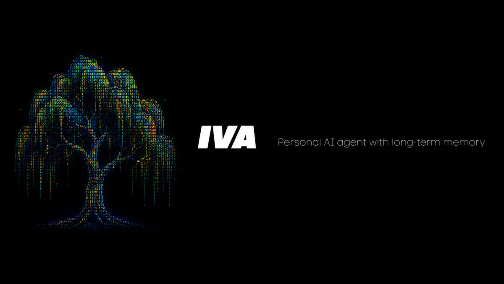

English · Русский

Личный AI-агент с долговременной памятью. Ставится одной командой на сервер за $4 и помнит про вас всё.
Живёт в Telegram. Собран на eve, агентном фреймворке Vercel. Около $9 в месяц.
curl -fsSL https://raw.githubusercontent.com/smixs/iva/main/install.sh | bashOpenClaw, Hermes, nanobot - хороших агентов хватает. Зачем ещё один? Затем, что каждый сваливает на вас одну и ту же гору выбора: какую модель, какую память, какой поиск, как всё связать. Слишком много выбора - вот настоящая проблема. Поэтому выбор я сделал сам: постоянно тестирую агентов, модели, связки и харнесы, оставляю самое лучшее и собираю в Iva - лучшее из всех агентов в одном. Открытый код на открытых моделях (DeepSeek, Kimi, GLM), модель выбираете вы по имени, ваш ключ, без наценки. Как Linux Mint среди AI-агентов: одна команда - и всё работает. Агентов много, а этот - мой. Теперь и ваш.
Память Iva устроена как дерево (а ива - это дерево). Это «low-context memory» по замыслу: в модель никогда не грузится вся история, только крошечное ядро плюс то, что нужно под задачу - находится обычным поиском по файлам.
Каждую ночь Iva сворачивает листья в выжимки и собирает их вверх по веткам - иерархический DAG выжимок, который сжимает старые дни, сохраняя указатель на каждый оригинал. Над памятью я работаю дольше всего (agent-second-brain → autograph → Iva), в основе - пейпер LCM: Lossless Context Management плюс куча практики. Одна из лучших схем памяти у личного агента сегодня. Ноль инфраструктуры, всё читаемо и git-diff-аемо - никакой векторной БД, которую надо запускать и оплачивать.
Бесплатный и открытый. Платите только за маленький всегда включённый сервер (дроплет за $4 - 1 ядро, 512 МБ, 10 ГБ) и одну подписку на модель - OpenCode Zen Go (~$5/мес) или Ollama Cloud (~$20/мес), оба OpenAI-совместимы, ваш ключ. Около $9 в месяц со всем. Голос работает на Deepgram (бесплатный стартовый кредит).